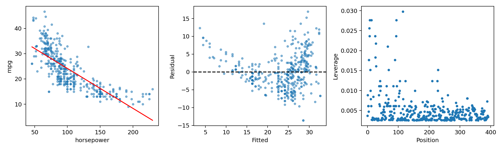

代码 3.7-03 · 第 8 题：散点、残差与杠杆
按完整 Notebook 的顺序运行；本块可能依赖前面的变量。3.6—3.7包含教材真实数据与模拟实验；全样本统计分析不等于独立测试评估。
逐步读代码
np.linspace 生成等间隔横坐标，计算拟合直线高度后作图。axes[0:3]中的每个坐标轴承载不同诊断；set同时设置标签。np.arange生成0到n-1的位置，杠杆值按同样顺序绘制。保存后close释放图；本书插图读取保存文件。位置不是原始行索引标签。
实际运行输出
max leverage position: 115
